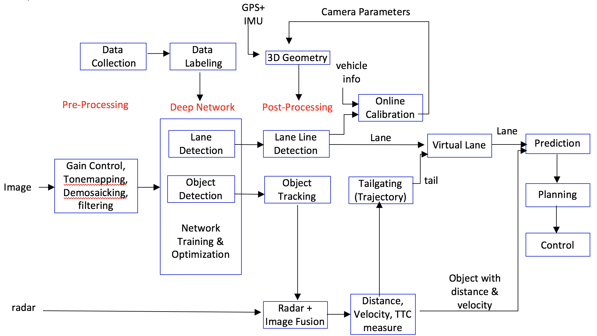

Perception
Apollo 2.5 April 19, 2018
Introduction
Apollo 2.5 aims for Level-2 autonomous driving with low cost sensors. An autonomous vehicle will stay in the lane and keep a distance with a closest in-path vehicle (CIPV) using a single front-facing camera and a frontal radar. Apollo 2.5 supports high-speed autonomous driving on highway without any map. The deep network was learned to process an image data. The performance of the deep network will be improved over time as collecting more data.
Safety alert
Apollo 2.5 does not support a high curvature road, a road without lane marks including local roads and intersections. The perception module is based on the visual detection using a deep network with limited data. Therefor, before we release a better network, the driver should be careful in driving and always be ready to disengage the autonomous driving by turning the wheel to the right direction. Please perform the test drive at the safe and restricted area.
Recommended road
Road with clear white lane lines on both sides
Avoid
High curvature road
Road without lane line marks
Intersection
Butt dots or dotted lane lines
Public road
Perception modules
The flow chart of each module is shown below.

Figure 1: Flow diagram of lane keeping system
Deep network
Deep network ingests an image and provides two detection outputs, lane lines and objects for Apollo 2.5. There is an ongoing debate on individual task and co-trained task for deep learning. Individual networks such as a lane detection network or an object detection network usually perform better than one co-trained multi-task network. However, with given limited resources, multiple individual networks will be costly and consume more time in processing. Therefore, for the economic design, co-train is inevitable with some compromise in performance. In Apollo 2.5, YOLO [1][2] was used as a base network of object and lane detection. The object has vehicle, truck, cyclist, and pedestrian categories and represented by a 2-D bounding box with orientation information. The lane lines are detected by segmentation using the same network with some modification.
Network optimization
In literature, there are multiple approaches of network optimization for real time processing of high framerate images. Rather than using 32bit float, a network with INT8 was implemented to achieve real-time implementation. TensorRT may be used to optimize the network.
Object detection/tracking
In a traffic scene, there are two kinds of objects: stationary objects and dynamic objects. Stationary objects include lane lines, traffic lights, and thousands of traffic signs written in different languages. Other than driving, there are multiple landmarks on the road mostly for visual localization including streetlamp, barrier, bridge on top of the road, or any skyline. For stationary object, we will detect only lane lines in Apollo 2.5.
Among dynamic objects, we care passenger vehicles, trucks, cyclists, pedestrians, or any other object including animal or body parts on the road. We can also categorize object based on which lane the object is in. The most important object is CIPV (closest object in our path). Next important objects would be the one in neighbor lanes.
2D-to-3D bounding box
Given a 2D box, with its 3D size and orientation in camera, this module searches the 3D position in a camera coordinate system and estimates an accurate 3D distance using either the width, the height, or the 2D area of that 2D box. The module works without accurate extrinsic camera parameters.
Object tracking
The object tracking module utilizes multiple cues such as 3D position, 2D image patches, 2D boxes, or deep learning ROI features. The tracking problem is formulated as multiple hypothesis data association by combining the cues efficiently to provide the most correct association between tracks and detected object, thus obtaining correct ID association for each object.
Lane detection/tracking
Among static objects, we will handle lane lines only in Apollo 2.5. The lane is for both longitudinal and lateral control. A lane itself guides lateral control and an object in the lane guides longitudinal control.
Lane lines
The lane can be represented by multiple sets of polylines such as next left lane line, left line, right line, and next right line. Given a heatmap of lane lines from the deep network, the segmented binary image is generated by thresholding. The method first finds the connected components and detects the inner contours. Then it generates lane marker points based on the contour edges in the ground space of ego-vehicle coordinate system. After that, it associates these lane markers into several lane line objects with corresponding relative spatial (e.g., left(L0), right(R0), next left(L1), next right(L2), etc.) labels.
CIPV (Closest-In Path Vehicle)
A CIPV is the closest vehicle in our ego-lane. An object is represented by 3D bounding box and its 2D projection from the top-down view localizes the object on the ground. Then, each object will be checked if it is in the ego-lane or not. Among the objects in our ego-lane, the closest one will be selected as a CIPV.
Radar + camera fusion
Given multiple sensors, their output should be combined in a synergic fashion. Apollo 2.5. introduces a sensor set with a radar and a camera. For this process, both sensors need to be calibrated. Each sensor will be calibrated using the same method introduced in Apollo 2.0. After calibration, the output will be represented in a 3-D world coordinate and each output will be fused by their similarity in location, size, time and the utility of each sensor. After learning the utility function of each sensor, the camera contributes more on lateral distance and the radar contributes more on longitudinal distance measurement.
Virtual lane
All lane detection results will be combined spatially and temporarily to induce the virtual lane which will be fed to planning and control. Some lane lines would be incorrect or missing in a certain frame. To provide the smooth lane line output, the history of lane lines using vehicle odometry is used. As the vehicle moves, the odometer of each frame is saved and lane lines in previous frames will be also saved in the history buffer. The detected lane line which does not match with the history lane lines will be removed and the history output will replace the lane line and be provided to the planning module.
Output of perception
The input of PnC will be quite different with that of the previous lidar-based system.
Lane line output
Polyline and/or a polynomial curve
Lane type by position: L1(next left lane line), L0(left lane line), R0(right lane line), R1(next right lane line)
Object output
3D rectangular cuboid
Relative velocity and direction
Type: CIPV, PIHP, others
Classification type: car, truck, bike, pedestrian
The world coordinate will be ego-coordinate in 3D where the rear center axle is an origin.
References
[1] J Redmon, S Divvala, R Girshick, A Farhadi, “You only look once: Unified, real-time object detection,” CVPR 2016
[2] J Redmon, A Farhadi, “YOLO9000: Better, Faster, Stronger,” arXiv preprint